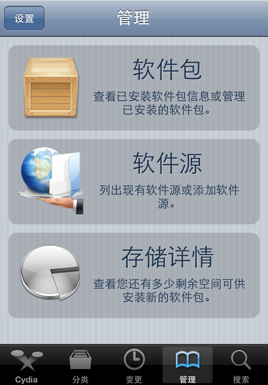
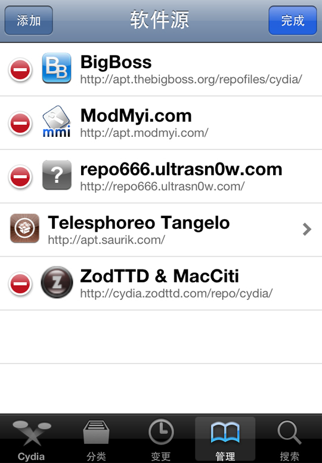
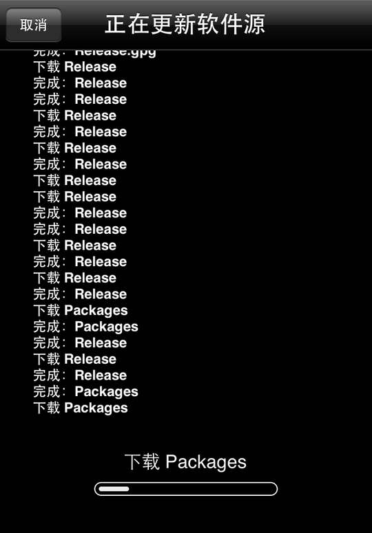
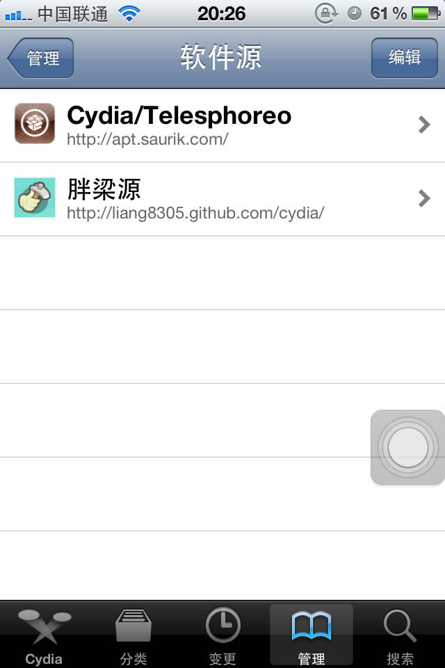
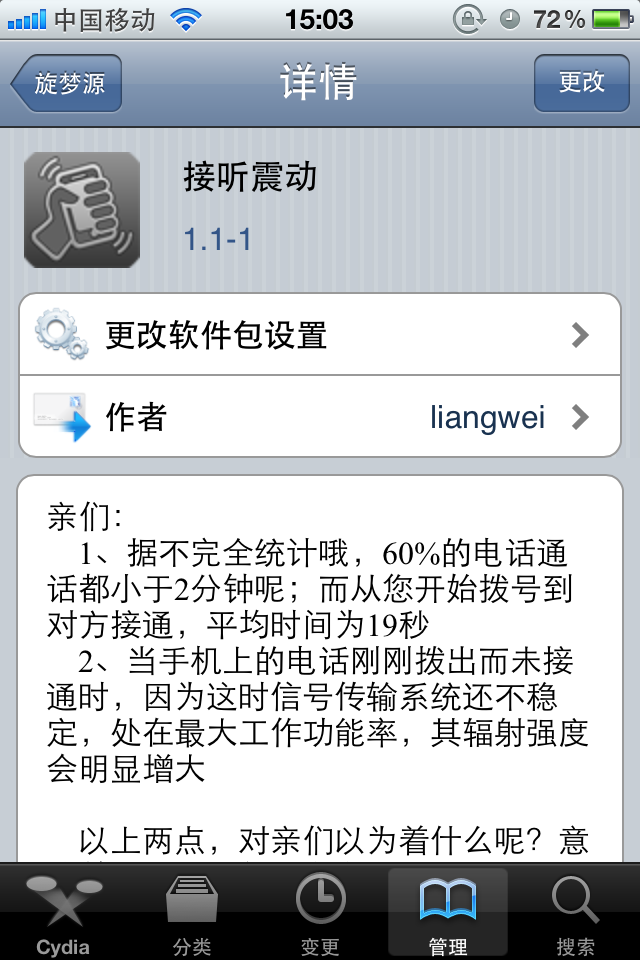

(1)打开 Cydia ► 管理 ► 软件源

(2)点击右上角的“编辑”按钮，然后再点击左上角的“添加”按钮

(3)输入{{ site.cydia.title }}地址:
http://liang8305.github.com/cydia
然后点击“添加源”按钮

(4)待 Cydia 更新完源列表后便可下载丰富的资源了

(5)现在在源列表就能看到{{ site.cydia.title }}啦

(6)点击
"{{ site.cydia.title }}",
就可以看到我们开发的插件和应用了
